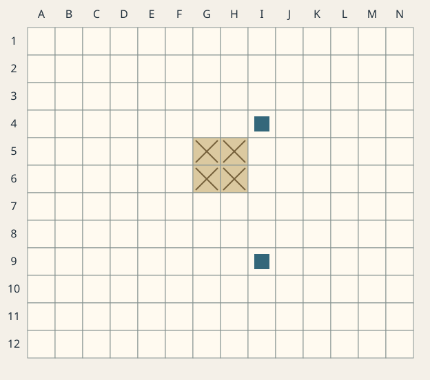

Одинаковые правила, разная история
Все карты совпадают с сеткой нативного пакета: 14 × 12, клетка — 5 футов. G5/H5/G6/H6 — трудная местность; I4/I9 — половинное укрытие. Остальные детали описания декоративны, пока ведущий не изменил поле штатно.
Расстановка и параметры
Начальные клетки героев: B3, B4, B5, B6, C3, C4, C5, C6; штатная подготовленная встреча назначает их присутствующим героям по именам. Противники: L3, L4, L5, L6, M3, M4. Используйте только нужное число фигур. Перед началом герои должны находиться в месте встречи.
Для 3 / 4 / 5 / 6 / 7 / 8 игроков: 2 / 3 / 3 / 4 / 5 / 6 противников, здоровье каждого 12 / 14 / 16 / 18 / 20 / 22. Защита 12; скорость 20 футов; одна ближняя атака +3, 1d4+1 дробящего урона, досягаемость 5 футов.
Враги — простая поддерживаемая модель. Мирные решения и ограничения сцены описаны отдельно; ведущий подтверждает их результат. После первого раунда напомните пути переговоров или отступления. Встречи не запускаются автоматически.
Люди под лестницей
Только если взрослые сторонники посредника пытаются преградить проход, а группа после предложенного отхода сознательно выбирает несмертельную стычку. Появление оппонентов само не запускает бой.
Цель и выходы
Освободить проход для добровольно уходящих людей и самим отойти к чайной. Победа не даёт права обыскать жильё, заставить свидетельствовать или получить дополнительную улику.
Предложите оставить один проход открытым, дождаться Дины либо воспользоваться второй лестницей. Уступка места и спокойное отступление полностью сохраняют доступ к документальным путям.
Поведение противников
Взрослые работники собраний, каждому не менее 24 лет; спорят о праве стоять на площадке. Их трости представлены обычным абстрактным ближним ударом, намерение несмертельное.
Остаются у широкой площадки, не преследуют отступающих и прекращают столкновение, когда проход освобождён или одна сторона сдаётся. Никаких специальных приёмов или автоматических захватов.
Размер группы
3 игрока: 2 оппонента по 12 хитов; 4: 3 по 14; 5: 3 по 16; 6: 4 по 18; 7: 5 по 20; 8: 6 по 22. У всех КД 12, одна ближняя атака +3, урон 1d4+1. Малые группы ведут одно освобождение прохода; большие делят помощь и разговор, не добавляя обязательных побед.


Сетка 14×12, клетка — 5 футов. Трудная местность только в G5, H5, G6, H6 (четыре клетки): мокрые ступени. Половинное укрытие в I4 и I9: широкие колонны. Два выхода ведут во двор и к чайной. Падения и тяжёлые травмы на лестнице не вводятся автоматически. Выходы и прочие детали задаёт ведущий в описании; на нативном поле дополнительных препятствий нет.
Стулья после собрания
После острой беседы взрослые распорядители могут толкаться у двери. Бой возможен лишь при согласии стола и решении героев остаться в столкновении вместо выхода или вызова хозяйки зала.
Цель и выходы
Дать согласным участникам беседы выйти и завершить стычку без наказательного преследования. Признание Крама не является наградой за бой, а доказательства остаются у их владельцев.
Передайте хозяйке право закрыть зал, договоритесь о письменном продолжении или уйдите через открытую боковую дверь. Можно потратить время на уборку стульев совместно, переведя спор в работу без броска.
Поведение противников
Взрослые организаторы от 26 лет, раздражённые сорванным порядком беседы; без оружия огнестрельного типа. Трости и толчки используют только поддержанный абстрактный ближний профиль.
Держатся у стульев, принимают сдачу и отходят после предложения прекратить спор. Не нападают на отказавшихся от участия и не преследуют вышедших из здания.
Размер группы
Для 3/4/5/6/7/8 игроков соответственно 2/3/3/4/5/6 оппонентов с 12/14/16/18/20/22 хитов. КД 12, одна ближняя атака +3 на 1d4+1. При 3–4 местах достаточно одного свободного выхода; при 5–8 больше участников получают задачи помощи, но условия прекращения одинаковы.

Сетка 14×12, клетка — 5 футов. Трудная местность только в G5, H5, G6, H6 (четыре клетки): неубранные стулья. Половинное укрытие в I4 и I9: низкие стойки. Две широкие двери доступны для отхода. Ширмы не запирают людей и не служат смертельной ловушкой. Выходы и прочие детали задаёт ведущий в описании; на нативном поле дополнительных препятствий нет.
Спор на переходе
Утром третьего дня группа встречает взрослых спорщиков, требующих остановиться для разговора. Только добровольный выбор стола разыграть физическое столкновение после доступного обхода запускает сцену боя.
Цель и выходы
Развести стороны и сохранить свободный путь к участку. Никто не должен добывать голос, подпись или показание в качестве платы за безопасный проход.
Предложите встречу после закрытия участка, попросите Брана обозначить свободный проход или выберите соседний мостик. Обход занимает пятнадцать игровых минут, объявленных заранее; это не скрытый автоматический провал.
Поведение противников
Взрослые горожане от 23 лет, переоценившие своё право удерживать собеседника. Политические предпочтения не определяют их человеческую ценность; механика тростей условна и несмертельна.
Занимают середину перехода, но отступают к скамьям при предложении закончить. Не выбрасывают вещи в канал, не похищают документы и не преследуют ушедших по обходу.
Размер группы
3 игрока — 2 противника, 12 хитов; 4 — 3, 14; 5 — 3, 16; 6 — 4, 18; 7 — 5, 20; 8 — 6, 22. Всем КД 12 и одна ближняя атака +3, 1d4+1. При любом размере можно закончить переговорами; дополнительные места получают наблюдение и помощь уходящим.

Сетка 14×12, клетка — 5 футов. Трудная местность только в G5, H5, G6, H6 (четыре клетки): скользкие доски. Половинное укрытие в I4 и I9: каменные опоры. Выходы на обеих коротких сторонах открыты. Канал обозначает край декорации, а не особое правило падения. Выходы и прочие детали задаёт ведущий в описании; на нативном поле дополнительных препятствий нет.